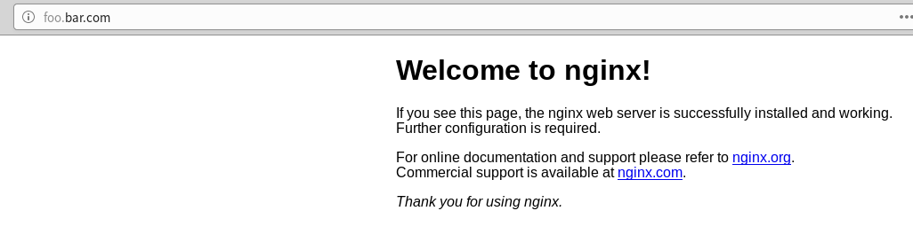

kubespray中插件nginx-ingresscontroller启用
在kubespray文件夹下inventory/rong/group_vars/k8s-cluster/addons.yml文件配置了插件的启用与关闭，修改addons.yml文件，启用插件nginx-ingresscontroller。
...
# Nginx ingress controller deployment
ingress_nginx_enabled: true
# ingress_nginx_host_network: false
# ingress_nginx_nodeselector:
# node-role.kubernetes.io/master: ""
# ingress_nginx_namespace: "ingress-nginx"
# ingress_nginx_insecure_port: 80
# ingress_nginx_secure_port: 443
# ingress_nginx_configmap:
# map-hash-bucket-size: "128"
# ssl-protocols: "SSLv2"
# ingress_nginx_configmap_tcp_services:
# 9000: "default/example-go:8080"
# ingress_nginx_configmap_udp_services:
# 53: "kube-system/kube-dns:53"
...
nginx-ingresstroller配置4层负载
在Kuberetes应用中，一般都是通过Ingress来暴露HTTP/HTTPS的服务。但是在实际应用中，还是有不少应用是TCP/UDP长连接的，这个也是可以通过Ingress来暴露。
原理
Ingress Controller在启动时会去watch两个configmap(一个tcp，一个 udp)，里面记录了后面需要反向代理的TCP的服务以及暴露的端口。如果两个configmap里面的key-value发生变换，Ingress controller会去更改Nginx的配置，增加对应的TCP的listen的server以及对应的后端的upstream。
在kubespray部署中，启用nginx-ingresscontroller后
容器实例ingress-nginx-controller的配置参数中存在指定tcp/udp配置configmap。
[root@node2 ~]# kubectl get pod -n ingress-nginx
NAME READY STATUS RESTARTS AGE
default-backend-749566fdb6-xkpl7 1/1 Running 1 17h
ingress-nginx-controller-l66sd 1/1 Running 1 17h
[root@node2 ~]#
[root@node2 ~]# kubectl get pod ingress-nginx-controller-l66sd -n ingress-nginx -o yaml
...
containers:
- args:
- /nginx-ingress-controller
- --default-backend-service=$(POD_NAMESPACE)/default-backend
- --configmap=$(POD_NAMESPACE)/ingress-nginx
- --tcp-services-configmap=$(POD_NAMESPACE)/tcp-services
- --udp-services-configmap=$(POD_NAMESPACE)/udp-services
- --annotations-prefix=nginx.ingress.kubernetes.io
...
存在两个初始的DATA为空的configmap(一个tcp-services，一个 udp-services)如下
[root@node2 ~]# kubectl get configmap -n ingress-nginx
NAME DATA AGE
ingress-controller-leader-nginx 0 17h
ingress-nginx 0 17h
tcp-services 0 17h
udp-services 0 17h
[root@node2 ~]#
下面通过配置一个UDP例子和一个TCP例子来说明nginx-ingress的4层负载。
4层UDP负载配置
在kubernetes环境存在kube-dns服务UDP端口53提供集群内部service的DNS解析功能，以此服务为例，通过ingress-nginxcontroller进行4层负载。 1、首先，创建一个nginx应用来验证DNS解析功能
[root@node2 ~]# kubectl run nginx --image=nginx:1.7.9 --replicas=3
kubectl run --generator=deployment/apps.v1beta1 is DEPRECATED and will be removed in a future version. Use kubectl create instead.
deployment.apps/nginx created
[root@node2 ~]# kubectl expose deployment nginx --port 80
service/nginx exposed
[root@node2 ~]# kubectl get svc
NAME TYPE CLUSTER-IP EXTERNAL-IP PORT(S) AGE
kubernetes ClusterIP 10.233.0.1 <none> 443/TCP 22h
nginx ClusterIP 10.233.1.88 <none> 80/TCP 5s
使用kube-dns解析nginx服务service。
[root@node2 ~]# kubectl get svc -n kube-system
NAME TYPE CLUSTER-IP EXTERNAL-IP PORT(S) AGE
kube-dns ClusterIP 10.233.0.3 <none> 53/UDP,53/TCP 18h
kubernetes-dashboard ClusterIP 10.233.31.59 <none> 443/TCP 21h
[root@node2 ~]# host -t A nginx.default.svc.cluster.local 10.233.0.3
Using domain server:
Name: 10.233.0.3
Address: 10.233.0.3#53
Aliases:
nginx.default.svc.cluster.local has address 10.233.1.88
[root@node2 ~]#
2、nginx-ingresscontroller配置4层UDP负载 在名为udp-services的configmap中加入配置
[root@node2 ~]# kubectl get configmaps udp-services -n ingress-nginx -o yaml
...
data:
"53": kube-system/kube-dns:53
...
3、测试由ingress-controller容器实例IP解析DNS功能
[root@node2 ~]# kubectl get pod -n ingress-nginx -o wide
NAME READY STATUS RESTARTS AGE IP NODE NOMINATED NODE
default-backend-749566fdb6-xkpl7 1/1 Running 1 18h 10.233.75.10 node2 <none>
ingress-nginx-controller-l66sd 1/1 Running 1 18h 10.233.75.11 node2 <none>
[root@node2 ~]#
[root@node2 ~]# host -t A nginx.default.svc.cluster.local 10.233.75.11
Using domain server:
Name: 10.233.75.11
Address: 10.233.75.11#53
Aliases:
nginx.default.svc.cluster.local has address 10.233.1.88
[root@node2 ~]#
进入ingress-controller容器实例观察nginx.conf配置，发现生成了UDP的upstream配置。
...
stream {
log_format log_stream [$time_local] $protocol $status $bytes_sent $bytes_received $session_time;
access_log /var/log/nginx/access.log log_stream;
error_log /var/log/nginx/error.log;
# TCP services
# UDP services
upstream udp-53-kube-system-kube-dns-53 {
server 10.233.102.146:53;
server 10.233.75.12:53;
}
server {
listen 53 udp;
proxy_responses 1;
proxy_timeout 600s;
proxy_pass udp-53-kube-system-kube-dns-53;
}
}
upstream后端两个server是kube-dns的两个pod容器实例IP和端口，nginx-ingresscontroller直达pod容器实例访问，不再经过service IP走iptables规则到pod容器实例访问。 删除kube-dns其中一个pod实例，使其pod实例重建获取新的IP地址。
[root@node2 ~]# kubectl delete pod kube-dns-5cd856946f-266lz -n kube-system
pod "kube-dns-5cd856946f-266lz" deleted
[root@node2 ~]# kubectl get pod -n kube-system -o wide
...
kube-dns-5cd856946f-7ktsg 3/3 Running 0 66s 10.233.75.17 node2 <none>
kube-dns-5cd856946f-xfljb 3/3 Running 3 18h 10.233.102.146 node1 <none>
...
进入nginx-ingresscontroller的pod实例查看nginx.conf配置文件，发现upstream更新为新的IP地址。
...
upstream udp-53-kube-system-kube-dns-53 {
server 10.233.102.146:53;
server 10.233.75.17:53;
}
...
如果不想通过nginx-ingresscontroller的pod容器实例IP访问4层负载，可以通过修改nginx-ingresscontroller的service把53端口向外暴露。从集群外访问DNS服务。
[root@node2 ~]# kubectl get svc -n ingress-nginx
NAME TYPE CLUSTER-IP EXTERNAL-IP PORT(S) AGE
default-backend ClusterIP 10.233.9.71 <none> 80/TCP 37h
ingress-nginx NodePort 10.233.24.252 <none> 80:30838/TCP,443:31693/TCP,53:30047/UDP,6379:32649/TCP 13h
在外部机器/etc/hosts配置一行192.168.122.61 portus.teligen.com，从集群外访问DNS服务。
xww@xww-HP-EliteBook-8460p:~$
xww@xww-HP-EliteBook-8460p:~$ dig @portus.teligen.com -p 30047 nginx.default.svc.cluster.local
; <<>> DiG 9.10.3-P4-Ubuntu <<>> @portus.teligen.com -p 30047 nginx.default.svc.cluster.local
; (1 server found)
;; global options: +cmd
;; Got answer:
;; ->>HEADER<<- opcode: QUERY, status: NOERROR, id: 9000
;; flags: qr aa rd ra; QUERY: 1, ANSWER: 1, AUTHORITY: 0, ADDITIONAL: 0
;; QUESTION SECTION:
;nginx.default.svc.cluster.local. IN A
;; ANSWER SECTION:
nginx.default.svc.cluster.local. 30 IN A 10.233.1.88
;; Query time: 1 msec
;; SERVER: 192.168.122.61#30047(192.168.122.61)
;; WHEN: Thu Nov 29 10:39:35 CST 2018
;; MSG SIZE rcvd: 65
xww@xww-HP-EliteBook-8460p:~$
4层TCP负载配置
这里使用kubernetes官网的guestbook例子，一个前端web应用访问后端redis集群，redis集群暴露TCP端口6379,通过把TCP端口6379通过nginx-ingresscontroller代理来说名4层TCP负载。 步骤如下 1、配置nginx-ingresscontroller的名为tcp-services的configmap。 2、运行redis 集群。 3、验证nginx-ingresscontroller的容器实例中nginx.conf配置更改，使用redis cli工具访问nginx-ingresscontroller的容器实例的代理tcp端口验证可以访问到redis集群。
配置nginx-ingresscontroller 4层TCP负载，在名为tcp-services的configmap加入配置
[root@node2 guestbook]# kubectl get configmap tcp-services -n ingress-nginx -o yaml
apiVersion: v1
data:
"6379": default/redis-master:6379
kind: ConfigMap
...
运行redis集群
kubectl create -f redis-master-deployment.yaml -f redis-master-service.yaml -f redis-slave-deployment.yaml -f redis-slave-service.yaml
集群启动运行
[root@node2 guestbook]# kubectl get pod -o wide
NAME READY STATUS RESTARTS AGE IP NODE NOMINATED NODE
redis-master-5df5c88598-x487p 1/1 Running 0 21m 10.233.102.152 node1 <none>
redis-slave-699876c56d-9krgs 1/1 Running 0 20m 10.233.102.153 node1 <none>
redis-slave-699876c56d-ldqmv 1/1 Running 0 20m 10.233.75.18 node2 <none>
进入nginx-ingresscontroller的容器实例中发现nginx.conf配置有了更改，增加了tcp的upstream。
www-data@ingress-nginx-controller-l66sd:/etc/nginx$ cat nginx.conf
...
# TCP services
upstream tcp-6379-default-redis-master-6379 {
server 10.233.102.152:6379;
}
server {
listen 6379;
proxy_timeout 600s;
proxy_pass tcp-6379-default-redis-master-6379;
}
# UDP services
upstream udp-53-kube-system-kube-dns-53 {
server 10.233.102.146:53;
server 10.233.75.17:53;
}
server {
listen 53 udp;
proxy_responses 1;
proxy_timeout 600s;
proxy_pass udp-53-kube-system-kube-dns-53;
}
...
使用redis cli工具访问nginx-ingresscontroller的容器实例的代理tcp端口验证是否可以访问到redis集群。 查看nginx-ingresscontroller的容器实例的IP。（也可以通过nginx-ingresscontroller的service从外部访问）
[root@node2 guestbook]# kubectl get pod -n ingress-nginx -o wide
NAME READY STATUS RESTARTS AGE IP NODE NOMINATED NODE
default-backend-749566fdb6-xkpl7 1/1 Running 1 21h 10.233.75.10 node2 <none>
ingress-nginx-controller-l66sd 1/1 Running 1 21h 10.233.75.11 node2 <none>
redis集群容器中有cli工具，进入redis容器中执行cli共访问nginx-ingresscontroller的容器实例的代理tcp端口，以验证可以访问到redis集群。
[root@node2 guestbook]# kubectl exec -it redis-master-5df5c88598-x487p /bin/bash
[ root@redis-master-5df5c88598-x487p:/data ]$
[ root@redis-master-5df5c88598-x487p:/data ]$ redis-cli -h 10.233.75.11 -p 6379 info server
# Server
redis_version:2.8.19
redis_git_sha1:00000000
redis_git_dirty:0
redis_build_id:a74551038794e13f
redis_mode:standalone
os:Linux 3.10.0-862.el7.x86_64 x86_64
arch_bits:64
multiplexing_api:epoll
gcc_version:4.8.2
process_id:1
run_id:5d2182be23ea070ccaf3631586a090f3da5b3505
tcp_port:6379
uptime_in_seconds:758
uptime_in_days:0
hz:10
lru_clock:16672730
config_file:/etc/redis/redis.conf
[ root@redis-master-5df5c88598-x487p:/data ]$
结果说明，可以从nginx-ingresscontroller的容器实例的代理tcp端口访问redis集群。
查看TCP6379暴露的外部nodeport端口。
[root@node2 ~]# kubectl get svc -n ingress-nginx
NAME TYPE CLUSTER-IP EXTERNAL-IP PORT(S) AGE
default-backend ClusterIP 10.233.9.71 <none> 80/TCP 37h
ingress-nginx NodePort 10.233.24.252 <none> 80:30838/TCP,443:31693/TCP,53:30047/UDP,6379:32649/TCP 13h
从集群外部访问。
[root@node2 guestbook]# kubectl exec -it redis-master-5df5c88598-x487p /bin/bash
[ root@redis-master-5df5c88598-x487p:/data ]$
[ root@redis-master-5df5c88598-x487p:/data ]$ redis-cli -h portus.teligen.com -p 32649 info server
# Server
redis_version:2.8.19
redis_git_sha1:00000000
redis_git_dirty:0
redis_build_id:a74551038794e13f
redis_mode:standalone
os:Linux 3.10.0-862.el7.x86_64 x86_64
arch_bits:64
multiplexing_api:epoll
gcc_version:4.8.2
process_id:1
run_id:5d2182be23ea070ccaf3631586a090f3da5b3505
tcp_port:6379
uptime_in_seconds:758
uptime_in_days:0
hz:10
lru_clock:16672730
config_file:/etc/redis/redis.conf
[ root@redis-master-5df5c88598-x487p:/data ]$
7层负载（基于hostname和单独基于path）
基于path的7层访问
创建ingress文件如下
apiVersion: extensions/v1beta1
kind: Ingress
metadata:
name: test-ingress
annotations:
nginx.ingress.kubernetes.io/rewrite-target: /
nginx.ingress.kubernetes.io/ssl-redirect: "false"
spec:
rules:
- http:
paths:
- path: /testpath
backend:
serviceName: nginx
servicePort: 80
注：必须配置注解nginx.ingress.kubernetes.io/rewrite-target和nginx.ingress.kubernetes.io/ssl-redirect。
运行结果如下，显示可以基于path访问http应用。
[root@node2 ~]# kubectl create -f path-nginx-ingress.yaml
ingress.extensions/test-ingress created
[root@node2 ~]#
[root@node2 ~]# kubectl get svc -n ingress-nginx
NAME TYPE CLUSTER-IP EXTERNAL-IP PORT(S) AGE
default-backend ClusterIP 10.233.9.71 <none> 80/TCP 37h
ingress-nginx NodePort 10.233.24.252 <none> 80:30838/TCP,443:31693/TCP,53:30047/UDP,6379:32649/TCP 13h
[root@node2 ~]# curl http://portus.teligen.com:30838/testpath
<!DOCTYPE html>
<html>
<head>
<title>Welcome to nginx!</title>
<style>
body {
width: 35em;
margin: 0 auto;
font-family: Tahoma, Verdana, Arial, sans-serif;
}
</style>
</head>
<body>
<h1>Welcome to nginx!</h1>
<p>If you see this page, the nginx web server is successfully installed and
working. Further configuration is required.</p>
<p>For online documentation and support please refer to
<a href="http://nginx.org/">nginx.org</a>.<br/>
Commercial support is available at
<a href="http://nginx.com/">nginx.com</a>.</p>
<p><em>Thank you for using nginx.</em></p>
</body>
</html>
[root@node2 ~]#
基于hostname的7层访问
创建ingress文件如下
apiVersion: extensions/v1beta1
kind: Ingress
metadata:
name: name-virtual-host-ingress
spec:
rules:
- host: foo.bar.com
http:
paths:
- backend:
serviceName: nginx
servicePort: 80
注，可以在外部浏览器所在节点上配置/etc/hosts文件加入
k8smasterIP foo.bar.com
后，通过浏览器访问http://foo.bar.com访问。

也可以以下面方式访问。
运行结果如下，显示可以基于hostname访问http应用。
[root@node2 ~]# kubectl create -f hostname-nginx-ingress.yaml
ingress.extensions/name-virtual-host-ingress created
[root@node2 ~]#
[root@node2 ~]# curl http://portus.teligen.com:30838 -H "host:foo.bar.com"
<!DOCTYPE html>
<html>
<head>
<title>Welcome to nginx!</title>
1 127.0.0.1 localhost
<style>
body {
width: 35em;
margin: 0 auto;
font-family: Tahoma, Verdana, Arial, sans-serif;
}
</style>
</head>
<body>
<h1>Welcome to nginx!</h1>
<p>If you see this page, the nginx web server is successfully installed and
working. Further configuration is required.</p>
<p>For online documentation and support please refer to
<a href="http://nginx.org/">nginx.org</a>.<br/>
Commercial support is available at
<a href="http://nginx.com/">nginx.com</a>.</p>
<p><em>Thank you for using nginx.</em></p>
</body>
</html>
[root@node2 ~]#
echoserver示例测试负载均衡类型
目前支持的负载均衡类型有（参考https://github.com/kubernetes/ingress-nginx/blob/master/docs/user-guide/nginx-configuration/configmap.md#load-balance）
- 轮训调度（round_robin）：默认配置。
- 最小负载（least_conn）：需要在ingress-nginx容器的启动参数加上
--enable-dynamic-configuration=false。 - 基于哈希路由（ip_hash）：需要在ingress-nginx容器的启动参数加上
--enable-dynamic-configuration=false，也可以考虑用注解（Annotations）nginx.ingress.kubernetes.io/upstream-hash-by在ingress上指定。 - peak EWMA（ewma）。
注：轮训调度：依次向每个副本分发请求 最小负载：记录每个副本未完成的请求，将流量分发到未完成请求数最少的副本 peak EWMA：记录每个副本请求响应时间，和未完成请求数加权，分发给权值最小的副本
负载均衡类型配置
1、在名为ingress-nginx的configmap可以配置全局的负载均衡类型，配置值可以为round_robin，least_conn，ip_hash，ewma。
2、在ingress使用注解nginx.ingress.kubernetes.io/load-balance配置，配置值可以为round_robin，least_conn，ip_hash，ewma。
3、在ingress使用注解nginx.ingress.kubernetes.io/upstream-hash-by配置基于自定义值的哈希（ip_hash）负载均衡，配置了该注解会覆盖注解nginx.ingress.kubernetes.io/load-balance配置。
注：上面的负载均衡配置是针对7层负载，4层负载当前版本只支持默认的轮训调度。
使用自己编写的UDP例子来测试4层负载轮训调度。
示例echoserver是一个显示自己主机名的UDP套接字应用，文件如下echoserver-deployment.yaml，echoserver-svc.yaml。
文件echoserver-deployment.yaml内容如下
apiVersion: extensions/v1beta1
kind: Deployment
metadata:
name: echoserver
spec:
replicas: 5
template:
metadata:
labels:
app: echoserver
spec:
containers:
- image: portus.teligen.com:5000/kubesprayns/echoserverpy:latest
imagePullPolicy: Always
name: echoserver
ports:
- containerPort: 31113
文件echoserver-svc.yaml内容如下
apiVersion: v1
kind: Service
metadata:
name: echoserver
spec:
ports:
- port: 31113
targetPort: 31113
protocol: UDP
selector:
app: echoserver
编辑名为udp-services的configmap。
加入内容如下
"31113": default/echoserver:31113
然后在名为ingress-nginx的service增开31113 UDP端口。
[root@node2 echoserver]# cat ingress-nginx-svc.yaml
apiVersion: v1
kind: Service
metadata:
name: ingress-nginx
namespace: ingress-nginx
labels:
app.kubernetes.io/name: ingress-nginx
app.kubernetes.io/part-of: ingress-nginx
spec:
type: NodePort
ports:
- name: http
port: 80
targetPort: 80
protocol: TCP
- name: https
port: 443
targetPort: 443
protocol: TCP
- name: udps1
port: 53
targetPort: 53
protocol: UDP
- name: echoserver
port: 31113
targetPort: 31113
protocol: UDP
- name: redis
port: 6379
targetPort: 6379
protocol: TCP
selector:
app.kubernetes.io/name: ingress-nginx
app.kubernetes.io/part-of: ingress-nginx
[root@node2 echoserver]#
获取ingress-nginx的service对外暴露31113的对应nodePort端口为31694。
[root@node2 echoserver]# kubectl get svc -n ingress-nginx
NAME TYPE CLUSTER-IP EXTERNAL-IP PORT(S) AGE
default-backend ClusterIP 10.233.9.71 <none> 80/TCP 41h
ingress-nginx NodePort 10.233.24.252 <none> 80:30838/TCP,443:31693/TCP,53:30047/UDP,31113:31694/UDP,6379:32649/TCP 17h
使用客户端脚本client.py内容如下，配置了目标服务IP和端口。
import socket
import sys
# Create a UDP socket
sock = socket.socket(socket.AF_INET, socket.SOCK_DGRAM)
server_address = ('portus.teligen.com', 31694)
message = 'This is the message. It will be repeated.'
try:
# Send data
print >>sys.stderr, 'sending "%s"' % message
sent = sock.sendto(message, server_address)
# Receive response
print >>sys.stderr, 'waiting to receive'
data, server = sock.recvfrom(4096)
print >>sys.stderr, 'received "%s"' % data
finally:
print >>sys.stderr, 'closing socket'
sock.close()
运行命令如下
while true; do python client.py; sleep 1; echo "********************"; done
可以发现每次响应的pod容器实例不同，以轮询方式提供。

使用自己编写的echoserver例子来测试4层TCP负载轮训调度。
示例echoserver是一个显示自己主机名的TCP套接字应用，文件如下echoserver-deployment.yaml，echoserver-svc.yaml。
文件echoserver-deployment.yaml内容如下
apiVersion: extensions/v1beta1
kind: Deployment
metadata:
name: echoservertcp
spec:
replicas: 5
template:
metadata:
labels:
app: echoservertcp
spec:
containers:
- image: portus.teligen.com:5000/kubesprayns/echoservertcppy:latest
imagePullPolicy: Always
name: echoserver
ports:
- containerPort: 31114
文件echoserver-svc.yaml内容如下
apiVersion: v1
kind: Service
metadata:
name: echoservertcp
spec:
type: NodePort
sessionAffinity: ClientIP
ports:
- port: 31114
targetPort: 31114
protocol: TCP
selector:
app: echoservertcp
编辑名为tcp-services的configmap。
加入内容如下
"31114": default/echoservertcp:31114
然后在名为ingress-nginx的service增开31114 TCP端口。
[root@node2 echoserver]# cat ingress-nginx-svc.yaml
apiVersion: v1
kind: Service
metadata:
name: ingress-nginx
namespace: ingress-nginx
labels:
app.kubernetes.io/name: ingress-nginx
app.kubernetes.io/part-of: ingress-nginx
spec:
type: NodePort
ports:
- name: http
port: 80
targetPort: 80
protocol: TCP
- name: https
port: 443
targetPort: 443
protocol: TCP
- name: udps1
port: 53
targetPort: 53
protocol: UDP
- name: echoserver
port: 31113
targetPort: 31113
protocol: UDP
- name: redis
port: 6379
targetPort: 6379
protocol: TCP
- name: echoservertcp
nodePort: 31114
port: 31114
targetPort: 31114
protocol: TCP
selector:
app.kubernetes.io/name: ingress-nginx
app.kubernetes.io/part-of: ingress-nginx
[root@node2 echoserver]#
获取ingress-nginx的service对外暴露31114的对应nodePort端口为31114。
[root@node2 httpechoserver]# kubectl get svc -n ingress-nginx
NAME TYPE CLUSTER-IP EXTERNAL-IP PORT(S) AGE
default-backend ClusterIP 10.233.9.71 <none> 80/TCP 43h
ingress-nginx NodePort 10.233.24.252 <none> 80:30838/TCP,443:31693/TCP,53:30047/UDP,31113:31694/UDP,6379:32649/TCP,31114:31114/TCP 18h
使用客户端脚本echoclient.py内容如下，配置了目标服务IP和端口。
import socket
import sys
# Create a TCP/IP socket
sock = socket.socket(socket.AF_INET, socket.SOCK_STREAM)
# Connect the socket to the port where the server is listening
server_address = ('portus.teligen.com', 31114)
print >>sys.stderr, 'connecting to %s port %s' % server_address
sock.connect(server_address)
try:
# Send data
message = 'M'
print >>sys.stderr, 'sending "%s"' % message
sock.sendall(message)
# Look for the response
amount_received = 0
amount_expected = len(message)
while amount_received < amount_expected:
data = sock.recv(1600)
amount_received += len(data)
print >>sys.stderr, 'received "%s"' % data
finally:
print >>sys.stderr, 'closing socket'
sock.close()
运行命令如下
while true; do python echoclient.py; sleep 1; echo "********************"; done
可以发现每次响应的pod容器实例不同，以轮询方式提供。

使用kubernetes的service类型为NodePort暴露4层负载
使用service类型为NodePort暴露4层负载，默认的负载均衡策略是随机选取一个pod容器实例来提供服务。
 在
在service定义文件加入配置sessionAffinity: ClientIP。可以定义负载均衡策略为基于访问客户端IP的哈希。
[root@node2 httpechoserver]# cat echoserver-svc.yaml
apiVersion: v1
kind: Service
metadata:
name: echoservertcp
spec:
type: NodePort
sessionAffinity: ClientIP
ports:
- port: 31114
targetPort: 31114
protocol: TCP
selector:
app: echoservertcp
[root@node2 httpechoserver]#